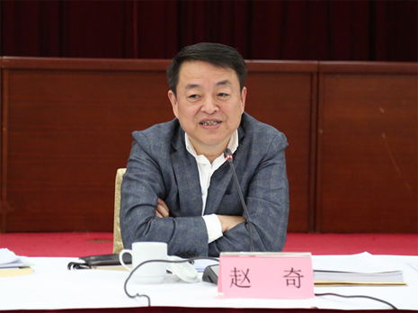
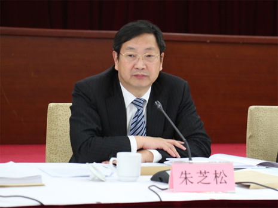

闵行区召开区文明委全体会议、“创全”工作暨迎接国家卫生区复审工作动员会
3月24日下午，闵行区召开文明委全体会议、“创全”工作会议暨迎接国家卫生区复审工作动员大会。区委书记赵奇、区委副书记、区长朱芝松、区委副书记于勇等出席会议。
会上，区文明办首先通报了2015-2016年度市区两级文明小区、村、单位创建申报评选情况，审议并通过了《2017年闵行区精神文明建设工作要点》、《闵行区关于网格化创全的实施意见》和《闵行区关于开展“四季风·人文美·修身行”的实施意见》。同时还通报了近期“创全”工作的督查情况。
区爱卫会通报了2016年闵行区巩固国家卫生区积分制检查情况，部署2017年国家卫生区迎复审工作。
区委书记赵奇在会议上指出，迎接国家卫生区复审的工作是“创全”工作有力展开的一项基础，虽然工作内容可控性强，但决不能因此掉以轻心，要切实将各项工作做到位，众志成城，携手共进。
赵奇强调，“创全”工作面广量大，任务重。既要面上，又要点上，既要突击，又要长效，既要硬件，又要软件。一要营造浓厚的宣传氛围。各大交通枢纽、机场、火车站、地铁站、商圈、小区等都要宣传全覆盖，让大家热起来，动起来。二要广泛发动群众。利用班长，三长和社区骨干队伍、社区志愿者，集中精力，围绕创全，把百姓撬动起来，寻找不足，补好短板。三要加强日常管理。通过日常的社会治理和社会管理，把百姓的获得感，满意度提升上去，是我们的工作核心，重中之重。四要提高精细化程度。要以习近平总书记提出的“对于超大型城市的管理，要像绣花一样精细”理念为指导思想，在工作布置中切不可泛泛而谈，各部门相关领导要真正到基层，实地去走、去看、去了解问题。五要提升工作的主动性。各项工作的推进不能只靠牵头单位的带领，要充分发挥主观能动性，将自身范围内的各项工作扎实做好。
区委副书记、区长朱芝松主持会议，并表示各单位要及时就会议上各项工作部署进行认真学习。深刻领会会议精神，主动作为，强化责任，细化措施，加强协作密切配合，形成创全工作的整体合力，把工作向前推进，提高百姓的获得感和满意度。